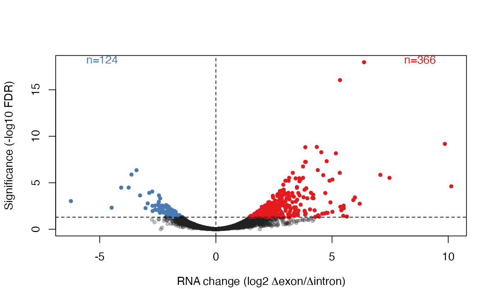

Using eisaR for Exon-Intron Split Analysis (EISA)
Michael Stadler
2020-02-18
eisaR.RmdIntroduction
Exon-Intron Split Analysis has been described in (Gaidatzis et al. 2015). It consists of separately quantifying exonic and intronic alignments in RNA-seq data, in order to measure changes in mature RNA and pre-mRNA reads across different experimental conditions. We have shown that this allows quantification of transcriptional and post-transcriptional regulation of gene expression.
The eisaR package contains convenience functions to facilitate the steps in an exon-intron split analysis, which consists of:
1. preparing the annotation (exonic and gene body coordinate ranges)
2. quantifying RNA-seq alignments in exons and introns
3. calculating and comparing exonic and intronic changes across conditions
4. visualizing the results
For the steps 1. and 2. above, this vignette makes use of Bioconductor annotation and the QuasR package. It is also possible to obtain count tables for exons and introns using some other pipeline or approach, and directly start with step 3.
Preparing the annotation
As mentioned, eisaR uses gene annotations from Bioconductor. They are provided in the form of TxDb objects, e.g. via packages such as TxDb.Mmusculus.UCSC.mm10.knownGene. You can see available annotations using the following code:
If you would like to use an alternative source of gene annotations, you might still be able to use eisaR by first converting your annotations into a TxDb (see makeTxDb in the GenomicFeatures package).
For this example, eisaR contains a small TxDb to illustrate how regions are extracted. We will load it from a file. Alternatively, the object would be loaded using library(...), for example using library(TxDb.Mmusculus.UCSC.mm10.knownGene).
# load package
library(eisaR)
# get TxDb object
txdbFile <- system.file("extdata", "hg19sub.sqlite", package = "eisaR")
txdb <- AnnotationDbi::loadDb(txdbFile)Exon and gene body regions are then extracted from the TxDb:
# extract filtered exonic and gene body regions
regS <- getRegionsFromTxDb(txdb = txdb, strandedData = TRUE)
#> extracting exon coordinates
#> total number of genes/exons: 12/32
#> removing overlapping/single-exon/ambiguous genes (8)
#> creating filtered regions for 4 genes (33.3%) with 20 exons (62.5%)
regU <- getRegionsFromTxDb(txdb = txdb, strandedData = FALSE)
#> extracting exon coordinates
#> total number of genes/exons: 12/32
#> removing overlapping/single-exon/ambiguous genes (9)
#> creating filtered regions for 3 genes (25%) with 17 exons (53.1%)
lengths(regS)
#> exons genebodies
#> 20 4
lengths(regU)
#> exons genebodies
#> 17 3
regS$exons
#> GRanges object with 20 ranges and 0 metadata columns:
#> seqnames ranges strand
#> <Rle> <IRanges> <Rle>
#> ENSG00000078808 chr1 17278-18194 -
#> ENSG00000078808 chr1 18828-21741 -
#> ENSG00000078808 chr1 23614-23747 -
#> ENSG00000078808 chr1 24202-24358 -
#> ENSG00000078808 chr1 27799-27854 -
#> ... ... ... ...
#> ENSG00000186891 chr1 5740-6070 -
#> ENSG00000186891 chr1 6755-7081 -
#> ENSG00000254999 chr3 2266-2513 +
#> ENSG00000254999 chr3 12300-12402 +
#> ENSG00000254999 chr3 12943-13884 +
#> -------
#> seqinfo: 3 sequences from an unspecified genomeAs you can see, the filtering procedure removes slightly more genes for unstranded data (strandedData = FALSE), as overlapping genes cannot be discriminated even if they reside on opposite strands.
You can also export the obtained regions into files. This may be useful if you plan to align and/or quantify reads outside of R. For example, you can use rtracklayer to export the regions in regS into .gtf files:
Quantify RNA-seq alignments in exons and introns
For this example we will use the QuasR package for indexing and alignment of short reads, and a small RNA-seq dataset that is contained in that package. As mentioned, it is also possible to align or also quantify your reads using an alternative aligner/counter, and skip over these steps.
Align reads
Let’s first copy the sample data from the QuasR package to the current working directory, all contained in a folder named extdata:
library(QuasR)
#> Loading required package: Rbowtie
file.copy(system.file(package = "QuasR", "extdata"), ".", recursive = TRUE)
#> [1] TRUEWe next align the reads to a mini-genome (fasta file extdata/hg19sub.fa) using qAlign:
sampleFile <- "extdata/samples_chip_single.txt"
genomeFile <- "extdata/hg19sub.fa"
proj <- qAlign(sampleFile = "extdata/samples_rna_single.txt",
genome = "extdata/hg19sub.fa",
aligner = "Rhisat2", splicedAlignment = TRUE)
#> Creating .fai file for: /home/travis/build/fmicompbio/eisaR/vignettes/extdata/hg19sub.fa
#> alignment files missing - need to:
#> create alignment index for the genome
#> create 4 genomic alignment(s)
#> Creating an Rhisat2 index for /home/travis/build/fmicompbio/eisaR/vignettes/extdata/hg19sub.fa
#> Finished creating index
#> Testing the compute nodes...OK
#> Loading QuasR on the compute nodes...OK
#> Available cores:
#> travis-job-1d4ec76e-0b93-46cc-bd8e-d600b2b7a633: 1
#> Performing genomic alignments for 4 samples. See progress in the log file:
#> /home/travis/build/fmicompbio/eisaR/vignettes/QuasR_log_583831d7c53f.txt
#> Genomic alignments have been created successfully
alignmentStats(proj)
#> seqlength mapped unmapped
#> Sample1:genome 95000 5961 43
#> Sample2:genome 95000 5914 86Count alignments in exons and gene bodies
Alignments in exons and gene bodies can now be counted using qCount and the regU that we have generated earlier (assuming that the data is unstranded). Intronic counts can then be obtained from the difference between gene bodies and exons:
cntEx <- qCount(proj, regU$exons, orientation = "any")
#> counting alignments...done
#> collapsing counts by sample...done
#> collapsing counts by query name...done
cntGb <- qCount(proj, regU$genebodies, orientation = "any")
#> counting alignments...done
#> collapsing counts by sample...done
cntIn <- cntGb - cntEx
head(cntEx)
#> width Sample1 Sample2
#> ENSG00000078808 4837 705 1065
#> ENSG00000186827 1821 37 8
#> ENSG00000186891 1470 26 2
head(cntIn)
#> width Sample1 Sample2
#> ENSG00000078808 10307 5 15
#> ENSG00000186827 1012 3 0
#> ENSG00000186891 1734 3 0As mentioned, both alignments and counts can also be obtained using alternative approaches. It is required that the two resulting exon and intron count tables have identical structure (genes in rows, samples in columns, the same order of rows and columns in both tables).
Load full count tables
The above example only contains very few genes. For the rest of the vignette, we will use count tables from a real RNA-seq experiment that are provided in the eisaR package. The counts correspond to the rawdata used in Figure 3a of (Gaidatzis et al. 2015) and are also available online from the supplementary material:
Run EISA conveniently
All the further steps in exon-intron split analysis can now be performed using a single function runEISA. If you prefer to perform the analysis step-by-step, you can skip now to section @ref(stepwise).
# remove "width" column
Rex <- cntEx[, colnames(cntEx) != "width"]
Rin <- cntIn[, colnames(cntIn) != "width"]
# create condition factor (contrast will be TN - ES)
cond <- factor(c("ES", "ES", "TN", "TN"))
# run EISA
res <- runEISA(Rex, Rin, cond)
#> filtering quantifyable genes...keeping 11034 from 20288 (54.4%)
#> fitting statistical model...done
#> calculating contrasts...doneAlternative implementations of EISA
There are five arguments in runEISA (modelSamples, geneSelection, effects, statFramework and pscnt) that control gene filtering, calculation of contrasts and the statistical method used, summarized in the bullet list below.
The default values of these arguments correspond to the currently recommended way of running EISA. You can also run EISA exactly as it was described in (Gaidatzis et al. 2015), by setting method = "Gaidatzis2015". This will override the values of the five other arguments and set them according to the published algorithm (as indicated below).
-
modelSamples: Account for individual samples in statistical model? Possible values are:-
FALSE(default andmethod="Gaidatzis2015"): use a model of the form~ condition * region
-
TRUE: use a model of the form~ sample + condition * region
-
-
geneSelection: How to select detected genes. Possible values are:-
"filterByExpr"(default): First, counts are normalized usingedgeR::calcNormFactors, treating intonic and exonic counts as individual samples. Then, theedgeR::filterByExprfunction is used with default parameters to select quantifyable genes. -
"none": This will use all the genes provided in the count tables, assuming that an appropriate selection of quantifyable genes has already been done.
-
"Gaidatzis2015"(method="Gaidatzis2015"): First, intronic and exonic counts are linearly scaled to the mean library size (estimated as the sum of all intronic or exonic counts, respectively). Then, quantifyable genes are selected as the genes with countsxthat fulfilllog2(x + 8) > 5in both exons and introns.
-
-
statFramework: The framework withinedgeRthat is used for the statistical analysis. Possible values are:-
"QLF"(default): quasi-likelihood F-test usingedgeR::glmQLFitandedgeR::glmQLFTest. This framework is highly recommended as it gives stricter error rate control by accounting for the uncertainty in dispersion estimation.
-
"LRT"(method="Gaidatzis2015"): likelyhood ratio test usingedgeR::glmFitandedgeR::glmLRT.
-
-
effects: How the effects (log2 fold-changes) are calculated. Possible values are:-
"predFC"(default): Fold-changes are calculated using the fitted model withedgeR::predFCand the value provided topscnt. Please note that if a sample factor is included in the statistical model (modelSamples=TRUE), effects cannot be obtained from that model. In that case, effects are obtained from a simpler model without sample effects. -
"Gaidatzis2015"(method="Gaidatzis2015"): Fold-changes are calculated using the formulalog2((x + pscnt)/(y + pscnt)). Ifpscntis not set to 8,runEISAwill warn that this deviates from the method used in Gaidatzis et al., 2015.
-
-
pscnt: The pseudocount that is added to normalized counts before log transformation. ForgeneSelection="Gaidatzis2015",pscntis used both in gene selection as well as in the calculation of log2 fold-changes. Otherwise,pscntis only used in the calculation of log2 fold-changes inedgeR::predFC(, prior.count = pscnt).
While different values for these arguments typically yield similar results, the defaults are often less stringent compared to method="Gaidatzis2015" when selecting quantifyable genes, but more stringent when calling significant changes (especially with low numbers of replicates).
Here is an illustration of how the results differ method="Gaidatzis2015" and the defaults:
res1 <- runEISA(Rex, Rin, cond, method = "Gaidatzis2015")
#> setting parameters according to Gaidatzis et al., 2015
#> filtering quantifyable genes...keeping 8481 from 20288 (41.8%)
#> fitting statistical model...done
#> calculating contrasts...done
res2 <- runEISA(Rex, Rin, cond)
#> filtering quantifyable genes...keeping 11034 from 20288 (54.4%)
#> fitting statistical model...done
#> calculating contrasts...done
# number of quantifyable genes
nrow(res1$DGEList)
#> [1] 8481
nrow(res2$DGEList)
#> [1] 11034
# number of genes with significant post-transcriptional regulation
sum(res1$tab.ExIn$FDR < 0.05)
#> [1] 490
sum(res2$tab.ExIn$FDR < 0.05)
#> [1] 131
# method="Gaidatzis2015" results contain most of default results
summary(rownames(res2$contrasts)[res2$tab.ExIn$FDR < 0.05] %in%
rownames(res1$contrasts)[res1$tab.ExIn$FDR < 0.05])
#> Mode FALSE TRUE
#> logical 14 117
# comparison of deltas
ids <- intersect(rownames(res1$DGEList), rownames(res2$DGEList))
cor(res1$contrasts[ids,"Dex"], res2$contrasts[ids,"Dex"])
#> [1] 0.9958296
cor(res1$contrasts[ids,"Din"], res2$contrasts[ids,"Din"])
#> [1] 0.9945688
cor(res1$contrasts[ids,"Dex.Din"], res2$contrasts[ids,"Dex.Din"])
#> [1] 0.9722784
plot(res1$contrasts[ids,"Dex.Din"], res2$contrasts[ids,"Dex.Din"], pch = "*",
xlab = expression(paste(Delta, "exon", - Delta, "intron for method='Gaidatzis2015'")),
ylab = expression(paste(Delta, "exon", - Delta, "intron for default parameters")))
On the estimation of interactions in a split-plot design experiment
The calculation of the significance of interactions (here whether the fold-changes differ between exonic or intronic data) is well defined for experimental designs were all samples are independent from one another. Within EISA, this is not the case (each sample yields two data points, on for exons and one for introns). That results in a dependency between datapoints: If a sample is affected by a problem in the experiment, it might at the same time give rise to outliers in both exonic and intronic counts.
In statistics, such an experimental design is often referred to as a split-plot design, and a recommended way to analyze interactions in such experiments would be to use a mixed effect model with the plot (in our case, the sample) as a random effect. The disadvantage here however would be that available packages for mixed effect models are not designed for count data, and we therefore use an alternative approach to explicitely model the sample dependency, by introducing a sample factor into the design matrix (for modelSamples=TRUE). That sample factor is nested in the condition factor (no sample can belong to more than one condition), and therefore not all coefficients can be estimated. We therefore drop one of the columns of the design matrix (identified by limma::nonEstimable).
This has no impact on the effects (the log2 fold-changes of modelSamples=TRUE and modelSamples=FALSE are nearly identical). However, in the presence of sample effects, modelSamples=TRUE increases the sensitivity of detecting genes with significant interactions. Here is a comparison of the EISA results with and without accounting for the sample in the model:
res3 <- runEISA(Rex, Rin, cond, modelSamples = FALSE)
#> filtering quantifyable genes...keeping 11034 from 20288 (54.4%)
#> fitting statistical model...done
#> calculating contrasts...done
res4 <- runEISA(Rex, Rin, cond, modelSamples = TRUE)
#> filtering quantifyable genes...keeping 11759 from 20288 (58%)
#> fitting statistical model...done
#> calculating contrasts...fitting model without sample factor...done
ids <- intersect(rownames(res3$contrasts), rownames(res4$contrasts))
# number of genes with significant post-transcriptional regulation
sum(res3$tab.ExIn$FDR < 0.05)
#> [1] 131
sum(res4$tab.ExIn$FDR < 0.05)
#> [1] 900
# modelSamples=TRUE results are a super-set of
# modelSamples=FALSE results
summary(rownames(res3$contrasts)[res3$tab.ExIn$FDR < 0.05] %in%
rownames(res4$contrasts)[res4$tab.ExIn$FDR < 0.05])
#> Mode TRUE
#> logical 131
# comparison of contrasts
diag(cor(res3$contrasts[ids, ], res4$contrasts[ids, ]))
#> Dex Din Dex.Din
#> 0.9999998 0.9999983 0.9958381
plot(res3$contrasts[ids, 3], res4$contrasts[ids, 3], pch = "*",
xlab = "Interaction effects for modelSamples=FALSE",
ylab = "Interaction effects for modelSamples=TRUE")
# comparison of interaction significance
plot(-log10(res3$tab.ExIn[ids, "FDR"]), -log10(res4$tab.ExIn[ids, "FDR"]), pch = "*",
xlab = "-log10(FDR) for modelSamples=FALSE",
ylab = "-log10(FDR) for modelSamples=TRUE")
abline(a=0, b=1, col="gray")
legend("bottomright", "y = x", bty = "n", lty = 1, col = "gray")Visualize EISA results
We can now visualize the results by plotting intronic changes versus exonic changes (genes with signficant interactions, which are likely to be post-transcriptionally regulated, are color coded):
Run EISA step-by-step
As an alternative to runEISA (section @ref(convenient)) and plotEISA (section @ref(plot)) described above, you can also analyse the data step-by-step as described in (Gaidatzis et al. 2015). This may be preferrable to understand each individual step and be able to access intermediate results.
The results obtained in this way are identical to what you get with runEISA(..., method = "Gaidatzis2015"), so if you are happy with runEISA you can skip the rest of the vignette.
Normalization
Normalization is performed separately on exonic and intronic counts, assuming that varying exon over intron ratios between samples are of technical origin.
# remove column "width"
Rex <- cntEx[,colnames(cntEx) != "width"]
Rin <- cntIn[,colnames(cntIn) != "width"]
Rall <- Rex + Rin
fracIn <- colSums(Rin)/colSums(Rall)
summary(fracIn)
#> Min. 1st Qu. Median Mean 3rd Qu. Max.
#> 0.2696 0.2977 0.3105 0.3459 0.3587 0.4929
# scale counts to the mean library size,
# separately for exons and introns
Nex <- t(t(Rex) / colSums(Rex) * mean(colSums(Rex)))
Nin <- t(t(Rin) / colSums(Rin) * mean(colSums(Rin)))
# log transform (add a pseudocount of 8)
NLex <- log2(Nex + 8)
NLin <- log2(Nin + 8)Identify quantifyable genes
Genes with very low counts in either exons or introns are better removed, as they will be too noisy to yield useful results. We use here a fixed cut-off on the normalized, log-transformed intron and exonic counts:
Calculate \(\Delta I\), \(\Delta E\) and \(\Delta E - \Delta I\)
The count tables were obtained from a total RNA-seq experiments in mouse embryonic stem (MmES) cells and derived terminal neurons (MmTN), with two replicates for each condition.
We will now calculate the changes between neurons and ES cells in introns (\(\Delta I\)), in exons (\(\Delta E\)), and the difference between the two (\(\Delta E - \Delta I\)):
Dex <- NLex[,c("MmTN_RNA_total_a","MmTN_RNA_total_b")] - NLex[,c("MmES_RNA_total_a","MmES_RNA_total_b")]
Din <- NLin[,c("MmTN_RNA_total_a","MmTN_RNA_total_b")] - NLin[,c("MmES_RNA_total_a","MmES_RNA_total_b")]
Dex.Din <- Dex - Din
cor(Dex[quantGenes,1], Dex[quantGenes,2])
#> [1] 0.9379397
cor(Din[quantGenes,1], Din[quantGenes,2])
#> [1] 0.8449252
cor(Dex.Din[quantGenes,1], Dex.Din[quantGenes,2])
#> [1] 0.5518187Both exonic and intronic changes are correlated across replicates, and so are the differences, indicating a reproducible signal for post-transcriptional regulation.
Statistical analysis
Finally, we use the replicate measurement in the edgeR framework to calculate the significance of the changes:
# create DGEList object with exonic and intronic counts
library(edgeR)
#> Loading required package: limma
#>
#> Attaching package: 'limma'
#> The following object is masked from 'package:BiocGenerics':
#>
#> plotMA
cnt <- data.frame(Ex = Rex, In = Rin)
y <- DGEList(counts = cnt, genes = data.frame(ENTREZID = rownames(cnt)))
# select quantifyable genes and normalize
y <- y[quantGenes, ]
y <- calcNormFactors(y)
# design matrix with interaction term
region <- factor(c("ex","ex","ex","ex","in","in","in","in"), levels = c("in", "ex"))
cond <- rep(factor(c("ES","ES","TN","TN")), 2)
design <- model.matrix(~ region * cond)
rownames(design) <- colnames(cnt)
design
#> (Intercept) regionex condTN regionex:condTN
#> Ex.MmES_RNA_total_a 1 1 0 0
#> Ex.MmES_RNA_total_b 1 1 0 0
#> Ex.MmTN_RNA_total_a 1 1 1 1
#> Ex.MmTN_RNA_total_b 1 1 1 1
#> In.MmES_RNA_total_a 1 0 0 0
#> In.MmES_RNA_total_b 1 0 0 0
#> In.MmTN_RNA_total_a 1 0 1 0
#> In.MmTN_RNA_total_b 1 0 1 0
#> attr(,"assign")
#> [1] 0 1 2 3
#> attr(,"contrasts")
#> attr(,"contrasts")$region
#> [1] "contr.treatment"
#>
#> attr(,"contrasts")$cond
#> [1] "contr.treatment"
# estimate model parameters
y <- estimateDisp(y, design)
fit <- glmFit(y, design)
# calculate likelihood-ratio between full and reduced models
lrt <- glmLRT(fit)
# create results table
tt <- topTags(lrt, n = nrow(y), sort.by = "none")
head(tt$table[order(tt$table$FDR, decreasing = FALSE), ])
#> ENTREZID logFC logCPM LR PValue FDR
#> 14680 14680 6.375699 6.554051 95.79494 1.274210e-22 1.080658e-18
#> 75209 75209 5.341413 6.400361 85.66167 2.135122e-20 9.053983e-17
#> 268354 268354 9.854778 8.402066 53.71350 2.319637e-13 6.557614e-10
#> 17957 17957 4.342644 6.864176 51.63948 6.668718e-13 1.413935e-09
#> 93765 93765 3.849670 6.603142 51.08555 8.842689e-13 1.499897e-09
#> 68666 68666 4.536512 5.872792 48.29846 3.660400e-12 5.173976e-09Visualize the results
Finally, we visualize the results by plotting intronic changes versus exonic changes (genes with signficant interactions, which are likely to be post-transcriptionally regulated, are color coded):
sig <- tt$table$FDR < 0.05
sum(sig)
#> [1] 490
sig.dir <- sign(tt$table$logFC[sig])
cols <- ifelse(sig, ifelse(tt$table$logFC > 0, "#E41A1CFF", "#497AB3FF"), "#22222244")
# volcano plot
plot(tt$table$logFC, -log10(tt$table$FDR), col = cols, pch = 20,
xlab = expression(paste("RNA change (log2 ",Delta,"exon/",Delta,"intron)")),
ylab = "Significance (-log10 FDR)")
abline(h = -log10(0.05), lty = 2)
abline(v = 0, lty = 2)
text(x = par("usr")[1] + 3 * par("cxy")[1], y = par("usr")[4], adj = c(0,1),
labels = sprintf("n=%d", sum(sig.dir == -1)), col = "#497AB3FF")
text(x = par("usr")[2] - 3 * par("cxy")[1], y = par("usr")[4], adj = c(1,1),
labels = sprintf("n=%d", sum(sig.dir == 1)), col = "#E41A1CFF")
# Delta I vs. Delta E
plot(rowMeans(Din)[quantGenes], rowMeans(Dex)[quantGenes], pch = 20, col = cols,
xlab = expression(paste(Delta,"intron (log2 TN/ES)")),
ylab = expression(paste(Delta,"exon (log2 TN/ES)")))
legend(x = "bottomright", bty = "n", pch = 20, col = c("#E41A1CFF","#497AB3FF"),
legend = sprintf("%s (%d)", c("Up","Down"), c(sum(sig.dir == 1), sum(sig.dir == -1))))
Session information
The output in this vignette was produced under:
sessionInfo()
#> R Under development (unstable) (2020-02-18 r77821)
#> Platform: x86_64-pc-linux-gnu (64-bit)
#> Running under: Ubuntu 16.04.6 LTS
#>
#> Matrix products: default
#> BLAS: /home/travis/R-bin/lib/R/lib/libRblas.so
#> LAPACK: /home/travis/R-bin/lib/R/lib/libRlapack.so
#>
#> locale:
#> [1] LC_CTYPE=en_US.UTF-8 LC_NUMERIC=C
#> [3] LC_TIME=en_US.UTF-8 LC_COLLATE=en_US.UTF-8
#> [5] LC_MONETARY=en_US.UTF-8 LC_MESSAGES=en_US.UTF-8
#> [7] LC_PAPER=en_US.UTF-8 LC_NAME=C
#> [9] LC_ADDRESS=C LC_TELEPHONE=C
#> [11] LC_MEASUREMENT=en_US.UTF-8 LC_IDENTIFICATION=C
#>
#> attached base packages:
#> [1] stats4 parallel stats graphics grDevices utils datasets
#> [8] methods base
#>
#> other attached packages:
#> [1] edgeR_3.29.0 limma_3.43.4 QuasR_1.27.0
#> [4] Rbowtie_1.27.1 rtracklayer_1.47.0 GenomicFeatures_1.39.5
#> [7] AnnotationDbi_1.49.1 Biobase_2.47.2 GenomicRanges_1.39.2
#> [10] GenomeInfoDb_1.23.13 IRanges_2.21.3 S4Vectors_0.25.12
#> [13] BiocGenerics_0.33.0 eisaR_0.8 BiocStyle_2.15.6
#>
#> loaded via a namespace (and not attached):
#> [1] httr_1.4.1 splines_4.0.0
#> [3] bit64_0.9-7 GenomicFiles_1.23.0
#> [5] assertthat_0.2.1 askpass_1.1
#> [7] BiocManager_1.30.10 BiocFileCache_1.11.4
#> [9] latticeExtra_0.6-29 blob_1.2.1
#> [11] BSgenome_1.55.3 GenomeInfoDbData_1.2.2
#> [13] Rsamtools_2.3.4 yaml_2.2.1
#> [15] progress_1.2.2 pillar_1.4.3
#> [17] RSQLite_2.2.0 backports_1.1.5
#> [19] lattice_0.20-38 glue_1.3.1
#> [21] digest_0.6.24 RColorBrewer_1.1-2
#> [23] XVector_0.27.0 htmltools_0.4.0
#> [25] Matrix_1.2-18 XML_3.99-0.3
#> [27] pkgconfig_2.0.3 ShortRead_1.45.3
#> [29] biomaRt_2.43.3 bookdown_0.17
#> [31] zlibbioc_1.33.1 purrr_0.3.3
#> [33] jpeg_0.1-8.1 BiocParallel_1.21.2
#> [35] tibble_2.1.3 openssl_1.4.1
#> [37] SummarizedExperiment_1.17.2 magrittr_1.5
#> [39] crayon_1.3.4 memoise_1.1.0
#> [41] evaluate_0.14 fs_1.3.1
#> [43] MASS_7.3-51.5 hwriter_1.3.2
#> [45] tools_4.0.0 prettyunits_1.1.1
#> [47] hms_0.5.3 matrixStats_0.55.0
#> [49] stringr_1.4.0 locfit_1.5-9.1
#> [51] DelayedArray_0.13.4 Biostrings_2.55.4
#> [53] compiler_4.0.0 pkgdown_1.4.1
#> [55] rlang_0.4.4 grid_4.0.0
#> [57] RCurl_1.98-1.1 VariantAnnotation_1.33.0
#> [59] rappdirs_0.3.1 bitops_1.0-6
#> [61] rmarkdown_2.1 DBI_1.1.0
#> [63] curl_4.3 R6_2.4.1
#> [65] GenomicAlignments_1.23.1 knitr_1.28
#> [67] dplyr_0.8.4 bit_1.1-15.2
#> [69] rprojroot_1.3-2 desc_1.2.0
#> [71] stringi_1.4.6 Rcpp_1.0.3
#> [73] png_0.1-7 vctrs_0.2.2
#> [75] dbplyr_1.4.2 tidyselect_1.0.0
#> [77] xfun_0.12References
Gaidatzis, D., L. Burger, M. Florescu, and M.B. Stadler. 2015. “Analysis of Intronic and Exonic Reads in Rna-Seq Data Characterizes Transcriptional and Post-Transcriptional Regulation.” Nature Biotechnology 33 (7): 722–29. https://doi.org/10.1038/nbt.3269.